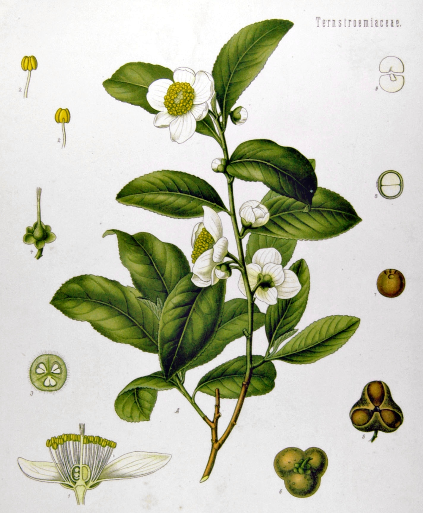

Czym właściwie jest herbata? Krótki przewodnik po świecie jednego krzewu
Dla wielu z nas herbata to po prostu rozgrzewający napar pity do śniadania lub w chłodny wieczór. W rzeczywistości kryje się za nią jedna z najbardziej fascynujących roślin na Ziemi oraz kunszt przetwarzania liści, który potrafi z tego samego krzewu wydobyć setki zupełnie różnych smaków i aromatów.

Jedna roślina, tysiące smaków: Camellia sinensis
W ścisłym, botanicznym znaczeniu herbata to napar przygotowywany wyłącznie z liści i pąków herbaty chińskiej (Camellia sinensis).
Wszystkie klasyczne herbaty – od delikatnych białych po intensywne, ciemne pu-erhy – pochodzą z tego samego gatunku rośliny. Choć w zależności od regionu uprawia się różne jej odmiany (głównie drobnolistną Camellia sinensis var. sinensis oraz wielkolistną Camellia sinensis var. assamica), to nie botanika decyduje o barwie naparu, lecz sposób obróbki liści po zbiorze, ze szczególnym uwzględnieniem poziomu ich utleniania (oksydacji).
Herbaty a napary ziołowe
- ważna różnica
W języku potocznym herbatą nazywamy niemal wszystko, co zalewamy wrzątkiem: miętę, rumianek, rooibos czy susz owocowy. Z punktu widzenia herbaciarza są to jednak napary ziołowe, owocowe lub tzw. tisany - nie zawierają liści Camellia sinensis ani naturalnie występującej w nich teiny (kofeiny)
Zrozumienie, że cała magia prawdziwej herbaty bierze się z jednej rodziny i pracy rąk ludzkich, to pierwszy krok do odkrywania tego bogatego świata.